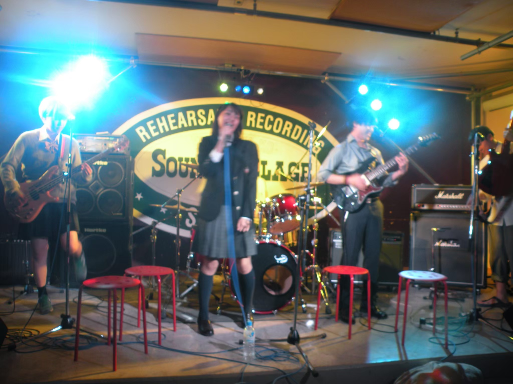
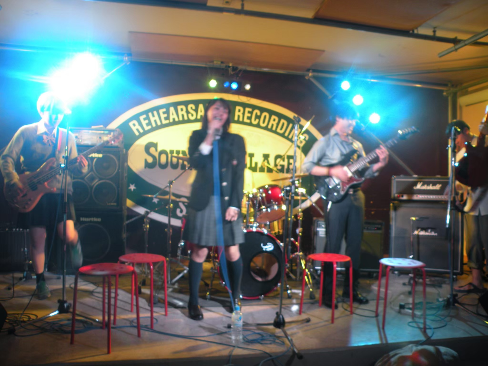

活動内容
・新歓ライブ
新歓ライブでは二回生以上の先輩が様々なアーティストごとの演奏
を行います。新入生の皆さんは音楽性を参考にしたり、気が合いそ
うな先輩がいたら是非話しかけてみてください！もちろん一年生の
出場も可能なので期日までにリハなどバンド合わせが決まっていれ
ばどんどん出演してください！
・夏合宿

夏合宿ではバスを借りて長野県まで行きます。スタジオと宿が一緒になった
施設を借りて、二泊三日の合宿を行います！ライブはもちろんのこと、宴会
や、スイカ割り、花火、BBQなど様々なイベントがあり、とても楽しいです！
 

他の活動を見る